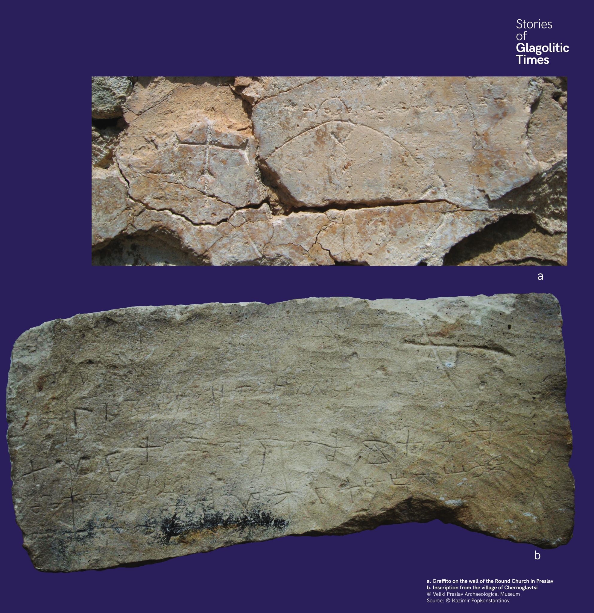

Kőbe vésett glagolita nyomok
Glagolita feliratok kőbe vésve is fennmaradtak. A preszlavi Kerek templom falába a 9. vagy 10. században bevésték a glagolita ábécét.


Glagolita feliratok kőbe vésve is fennmaradtak. A preszlavi Kerek templom falába a 9. vagy 10. században bevésték a glagolita ábécét.
Има и следи от глаголица върху камък. В Кръглата църква в Преслав е издълбана глаголическата азбука.